Nasi Padang: Mahakarya Kuliner Minangkabau yang Mendunia
Bumbu Melimpah, Cita Rasa Tiada Tara
A. Latar Belakang
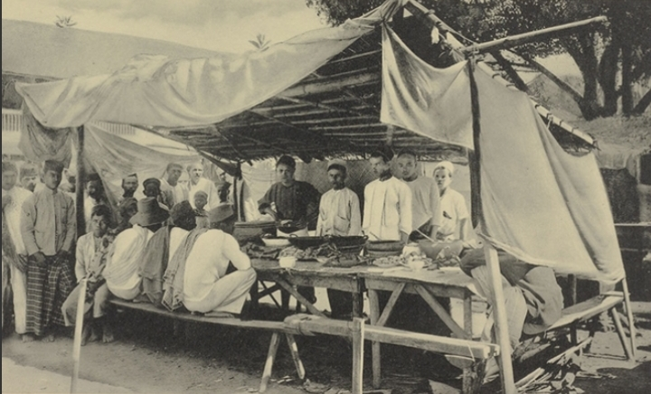
Asal Usul
Berasal dari Minangkabau, Sumatera Barat. Nasi Padang bukan sekadar makanan, melainkan tradisi dan identitas budaya.
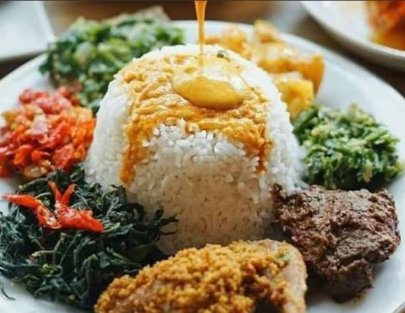
Ciri Khas
Penggunaan rempah-rempah yang kaya (rich in spices), santan pekat, serta proses memasak tradisional yang membutuhkan ketelitian dan kesabaran.
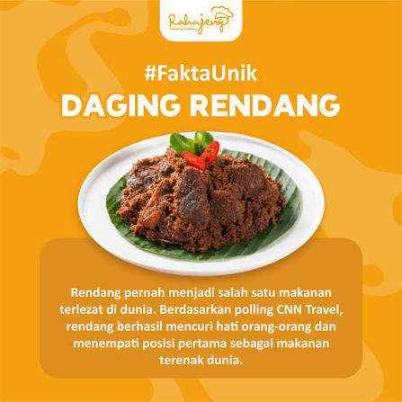
Pengakuan Dunia
Rendang yang menjadi salah satu menu utamanya pernah dinobatkan sebagai salah satu makanan terlezat di dunia versi CNN.
"Rendang pernah menjadi salah satu makanan terlezat di dunia. Berdasarkan polling CNN Travel, rendang berhasil mencuri hati orang-orang dan menempati posisi pertama sebagai makanan terenak dunia."
B. Menu Nasi Padang
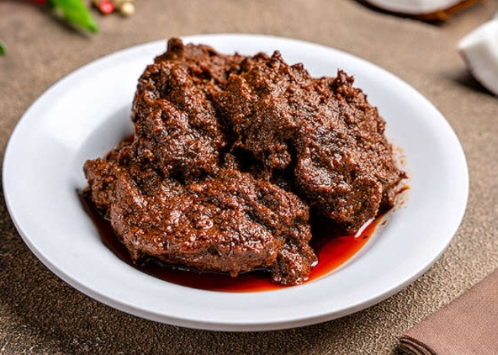
Rendang Daging
Olahan daging sapi yang dimasak berjam-jam dengan santan dan belasan rempah pilihan hingga menghitam, gurih, legit, dan meresap sempurna.
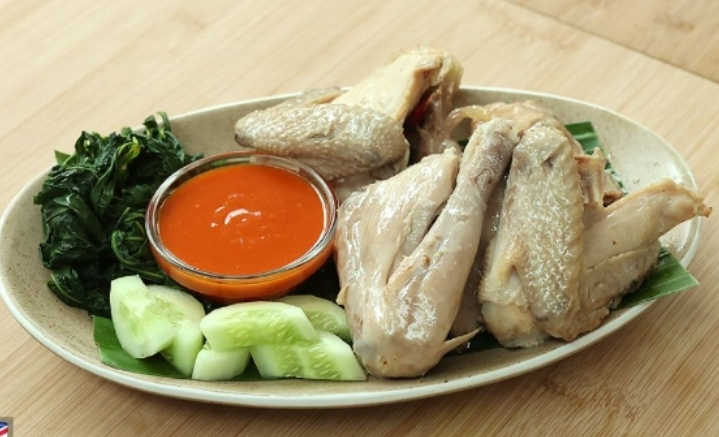
Ayam Pop
Ayam kampung khas dengan warna pucat khas hasil proses blanching dan goreng kilat, disajikan empuk, gurih manis, dan dipadu sambal tomat petai.
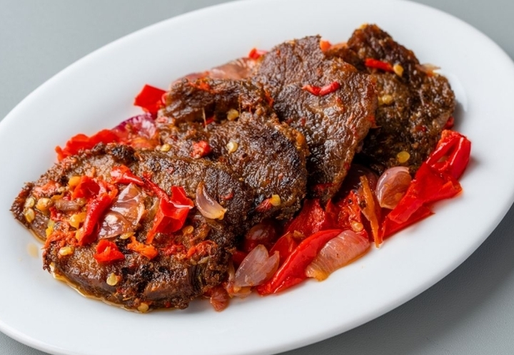
Dendeng Balado
Irisan daging sapi tipis yang digoreng garing (crispy) atau basah, disiram sambal balado merah dengan sensasi pedas dan gurih yang menggigit.
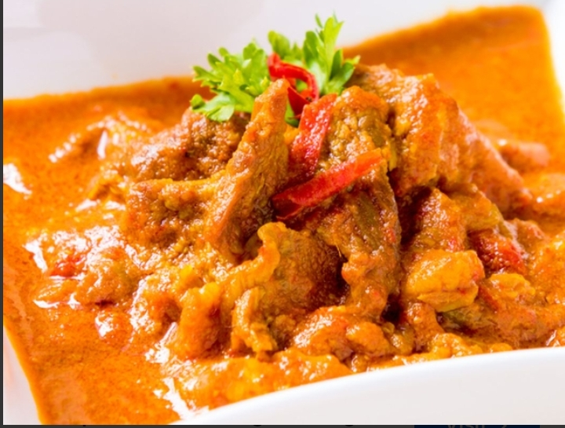
Gulai Cincang
Potongan daging dan tetelan sapi berminyak yang dimasak dalam kuah gulai kental, kaya akan rempah-rempah hangat seperti kapulaga dan pekak.

Ayam Bakar Padang
Ayam yang diungkep bumbu kuning rempah kental lalu dibakar ringan, menghasilkan aroma smoky dengan sensasi gurih rempah di setiap gigitan.
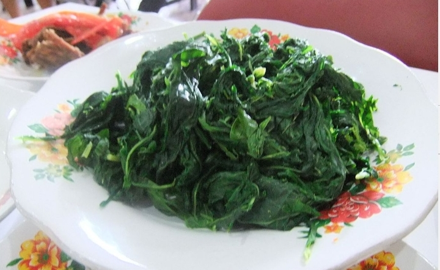
Daun Singkong
Daun singkong rebus empuk penyeimbang rasa dan memberikan sensasi segar di setiap porsi.
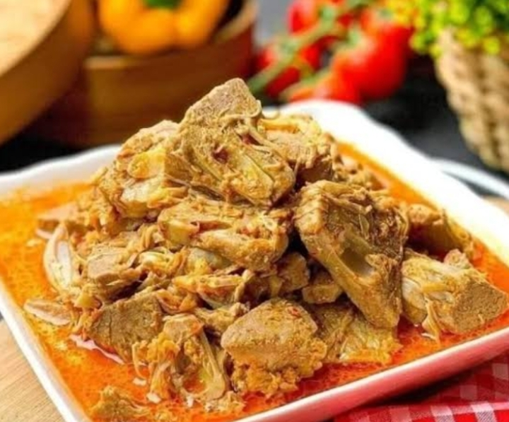
Gulai Nangka
Sayur nangka muda bersantan gurih kaya akan bumbu kuning Minang.
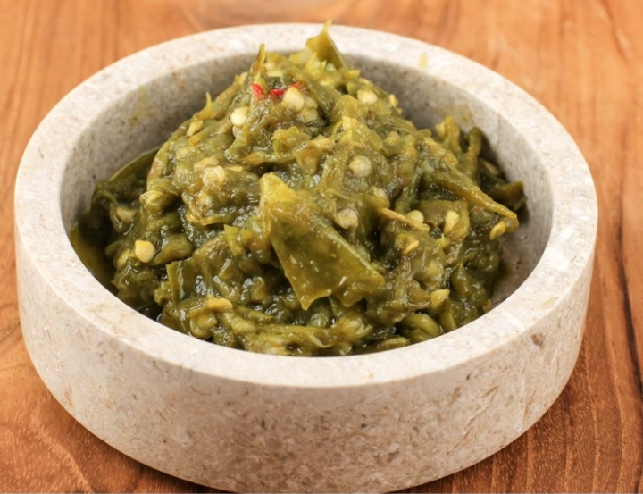
Sambal Ijo
Sambal cabai hijau khas yang gurih, segar, dan tidak terlalu pedas.
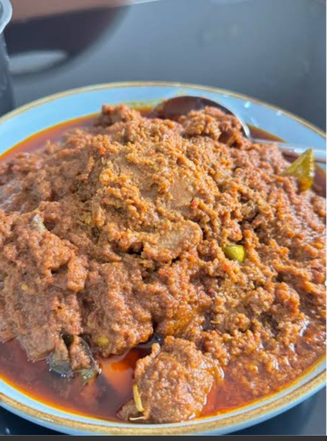
Bumbu Rendang
Ekstra kuah/bumbu rendang pekat peremas rasa hidangan agar makin mantap.
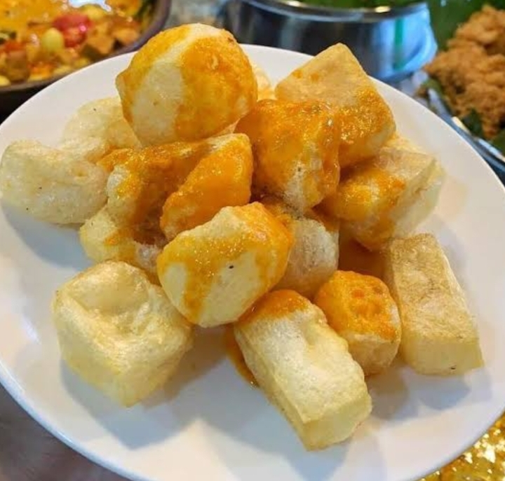
Kerupuk Kulit
Pelengkap renyah krecek/kerupuk kulit yang makin nikmat disiram kuah gulai.
C. Penutup
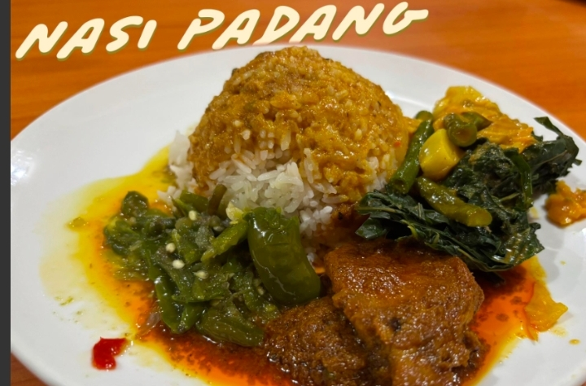
Rangkuman: Nasi Padang bukan sekadar santapan harian, melainkan warisan budaya kuliner Indonesia yang menawarkan pengalaman rasa luar biasa.